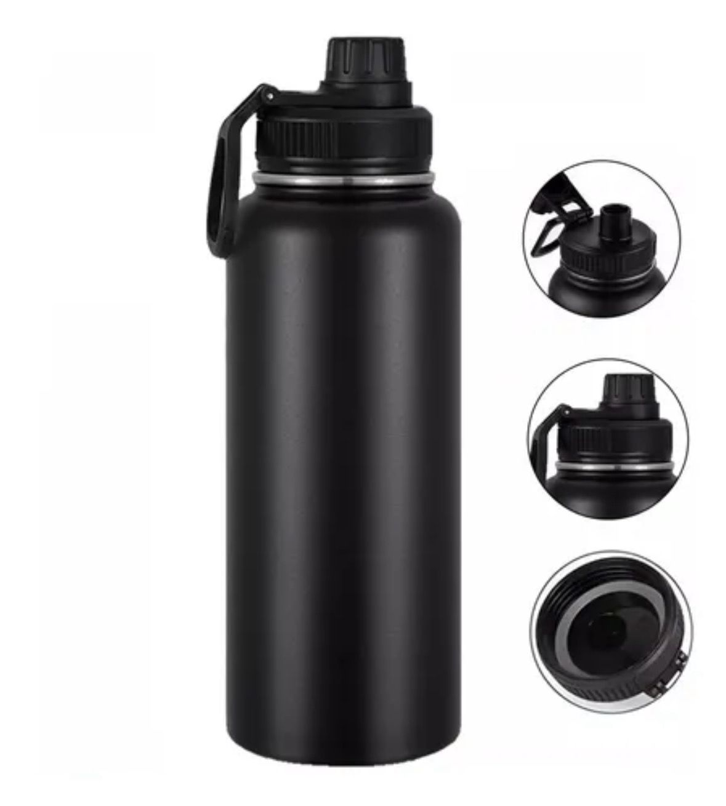
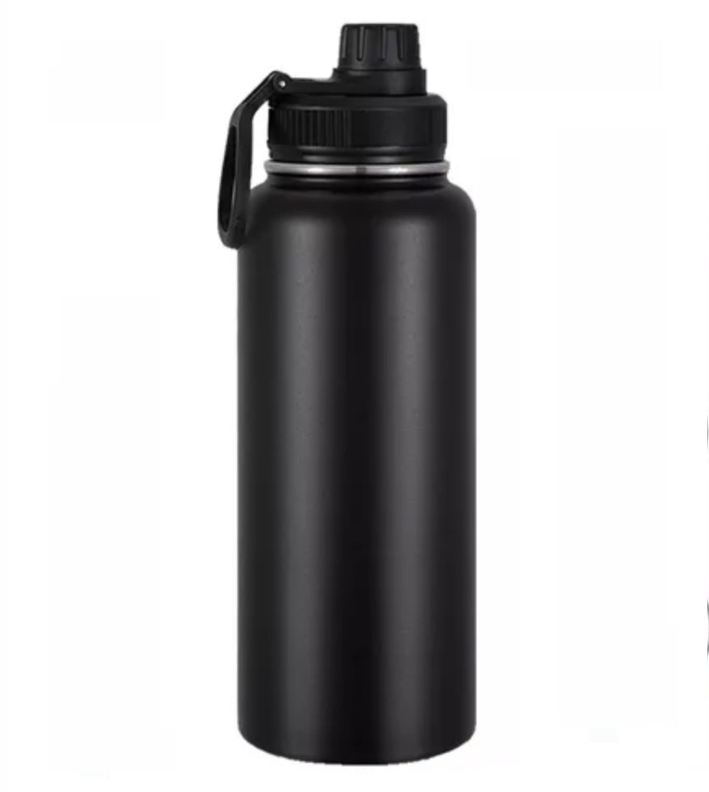
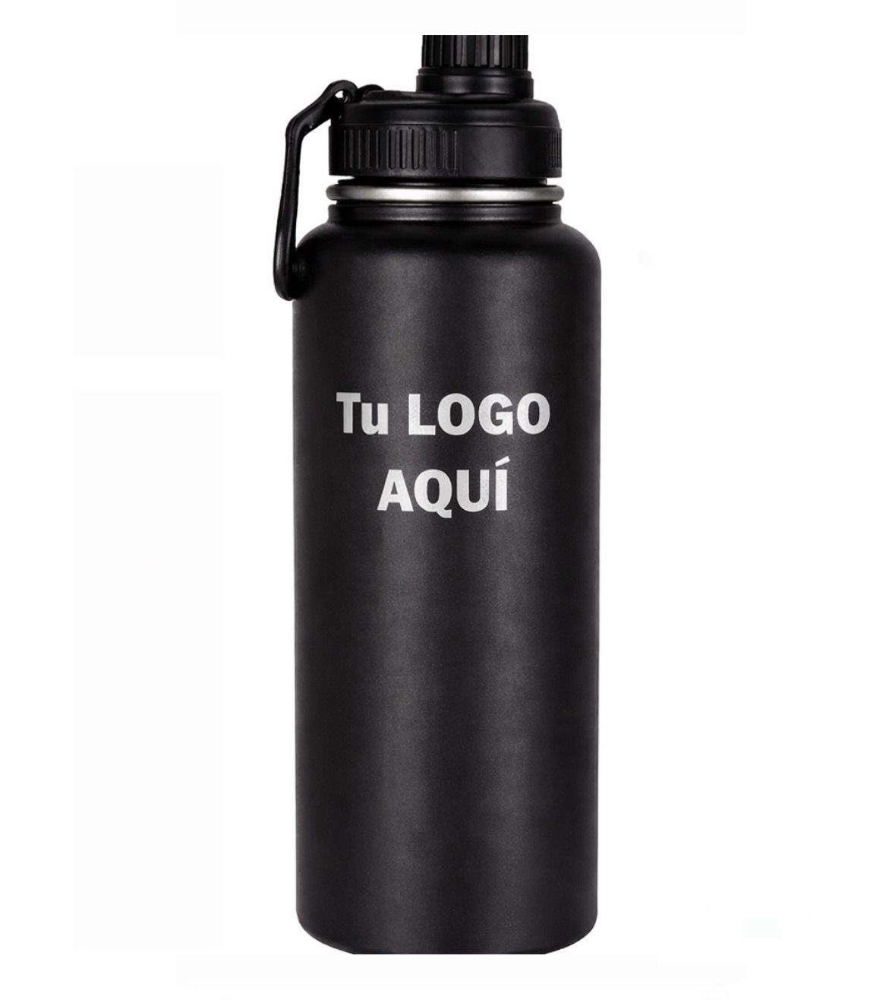
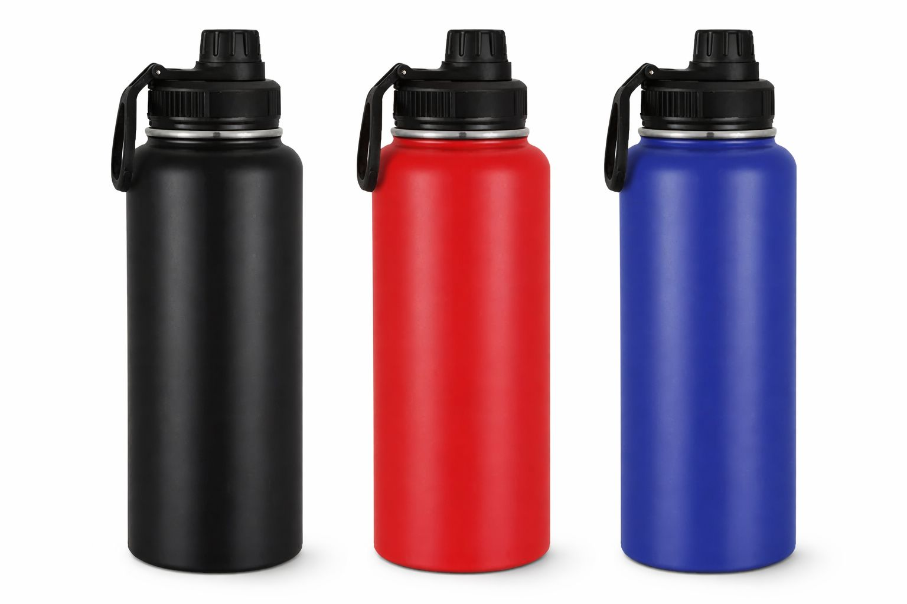
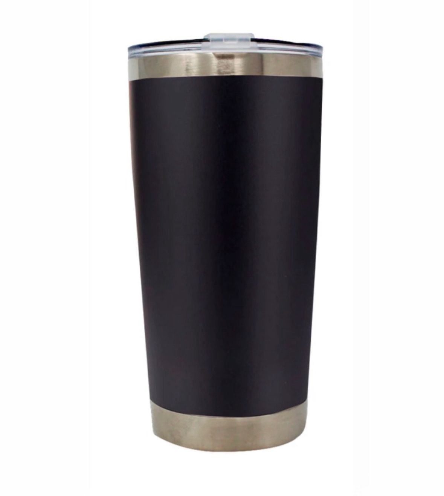
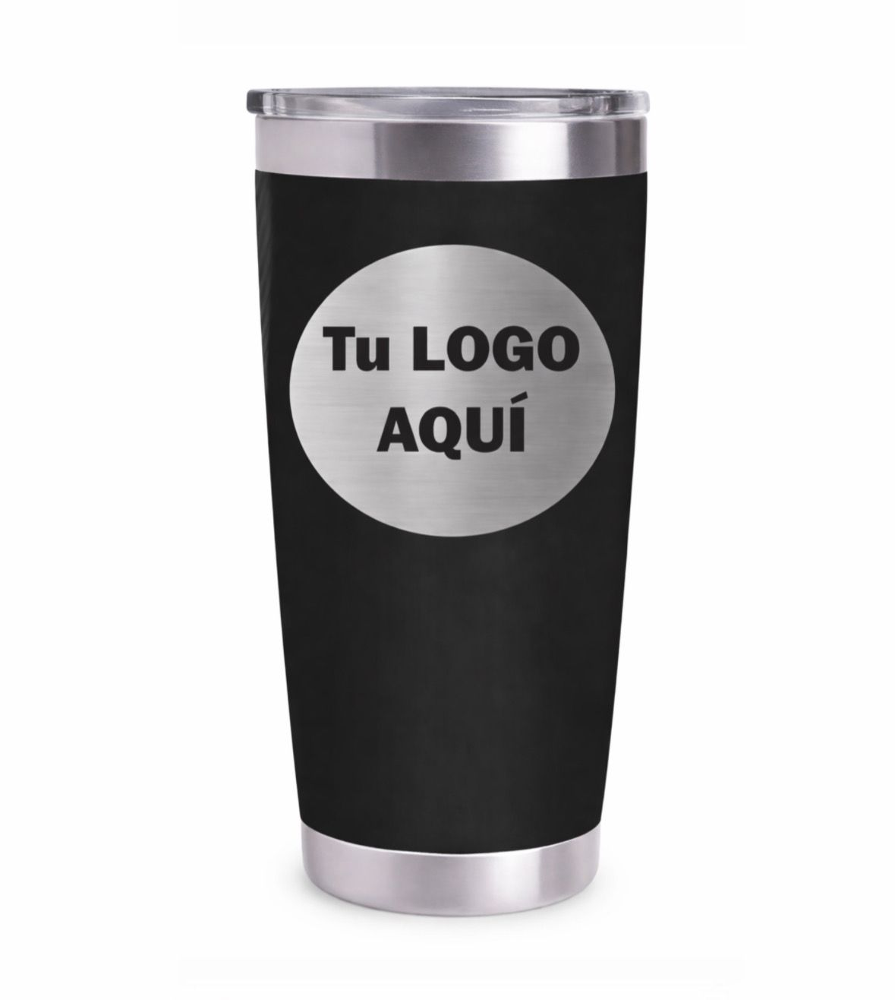
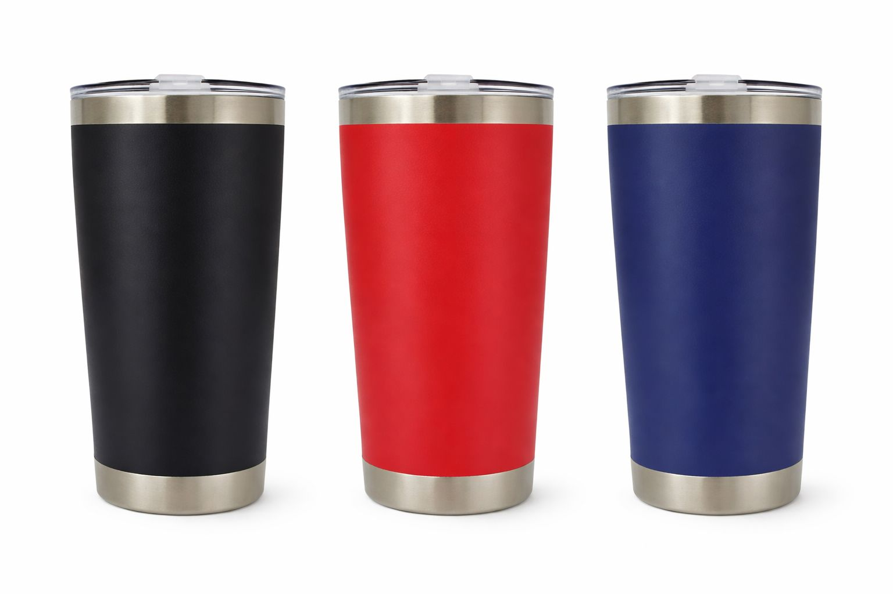

Termo

Este termo emplea aislamiento al vacío de doble pared para mantener
la temperatura de las bebidas (caliente o frío) durante 8 horas.
Hecho de acero inoxidable para mayor durabilidad. 32 oz (946 ml)

Termo normal, sin grabado.
Sin grabado: $200 MXN

Termo con grabado personalizado.
Con grabado: $230 MXN

Elige tu color favorito y personalízalo.
Mantiene tus bebidas calientes o frías por varias horas. Ideal para
café, té o agua fría.
- Acero inoxidable
- Mantiene temperatura (caliente y frío)
- Tapa de rosca antiderrames
Vaso Térmico

Disfruta tus bebidas a la temperatura ideal por más tiempo con este
vaso térmico de acero inoxidable. Su diseño de doble pared ayuda a
mantener bebidas calientes o frías durante horas. 20 oz (591 ml)
Vaso térmico normal, sin grabado.
Sin grabado: $150 MXN

Vaso térmico con grabado personalizado.
Con grabado: $180 MXN

Elige tu color favorito y personaliza tu vaso a tu gusto.
Mantén y disfruta tus bebidas favoritas, ya sean calientes o frías.
- Acero inoxidable
- Mantiene temperatura
- Tapa transparente con cierre deslizante
- Antiderrames